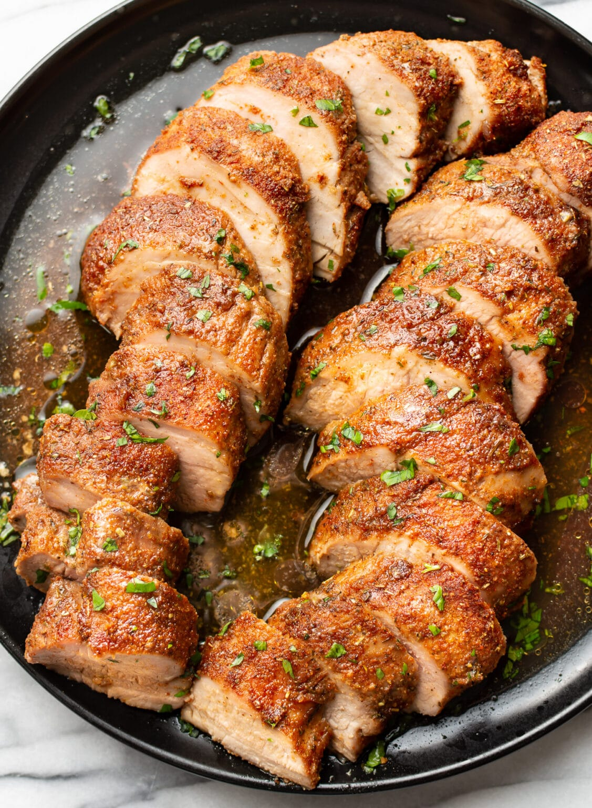

Pork Tenderloin

This baked pork tenderloin recipe is perfectly juicy and melt-in-your-mouth tender. No searing is required, so it’s fast and has minimal prep! It’s ready in just over 30 minutes.
Ingredients
- Pork tenderloin - lean and delicious
- Homemade seasoning rub - brown sugar, smoked paprika, garlic powder, onion powder, chili powder, Italian seasoning, salt & pepper
- Butter - unsalted
- Chopped parsley - optional, but good for freshness
Instructions
- Preheat your oven to 200F and move the rack to the middle position.
- Prep the tenderloins by cutting off any excess fat and the silver skin (the tough part that may cover some of each tenderloin). Pat the tenderloins dry with paper towel.
- Add the spice rub ingredients (brown sugar, smoked paprika, garlic powder, onion powder, chili powder, Italian seasoning, salt & pepper) to a small bowl and stir together. Coat the tenderloins all over with the spice rub.
- Add the pork tenderloins to a 9×13 (or similar size) baking dish and place the butter pats on top.
- Bake, uncovered, for about 25 minutes or until the pork has reached 62C. Let it rest 5-10 minutes before slicing it into medallions so it remains juicy.
- Pour the pan juices over the pork (they're also great over a side dish like mashed potatoes) and sprinkle with chopped parley if desired.
Homepage